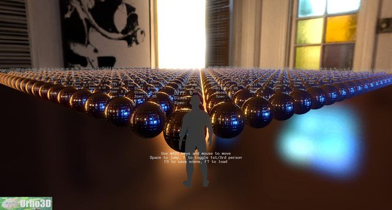

For a while I was working on some physically based shaders, however I don’t have so much time for them at the moment and I’ve noticed there are probably serious fundamental issues with the current work (not conservative? ouch), the work can be found here:
github.com/hdunderscore/Urho3D/tree/shaders
No need to recompile urho, just run Erun.bat in Bin/ to view a test scene (Press T and U to toggle between forward and deferred). Here’s what you’ll see:

The work started off from: github.com/larsbertram69/Lux
Things that work:
[ul][li]HDR decoding from rgbm / rgbd generated with: github.com/hdunderscore/cmft[/li]
[li]Forward and deferred (not prepass).[/li]
[li]GLSL and HLSL with hacktastic macros.[/li]
[li]IBL[/li][/ul]
There may be some other things hidden in there that could be salvaged.
If I had time I would:
[ul][li]Re-write the lux related source into a something more like what Epic demonstrated in their presentation (have brdf and specular contribution code separated so that they could be easily swapped out), and probably pick up some other things such as metalness-roughness and the optimisations they highlighted. Ideally during this process conservativeness would be achieved.[/li]
[li]Rework the lights, adding support for more variety[/li]
[li]Fix the parallax corrected cubemapping to not be locked to axis-aligned (and maybe pick up more generic shapes described here: seblagarde.wordpress.com/2012/0 … d-cubemap/ )[/li]
[li]Determine performance impact of structs.[/li][/ul]
Micro-tutorial:
[ul][li]You’ll need to make your own techniques/dive through the shaders for most things…[/li]
[li]Author using specular-glossiness workflow: In the specular texture: RGB = specular, A = glossiness[/li]
[li]Check your sRGB and HDR settings everywhere.[/li][/ul]
There are also many other things but the list would be very long… Since I noticed in the Editor topic that we had so many individuals working on the same issue, I thought perhaps I’ll share what I’ve got in hopes others interested in the same goal might step in to add to/salvage from/scrap the work here !
Good luck o>


 . . . .
. . . .